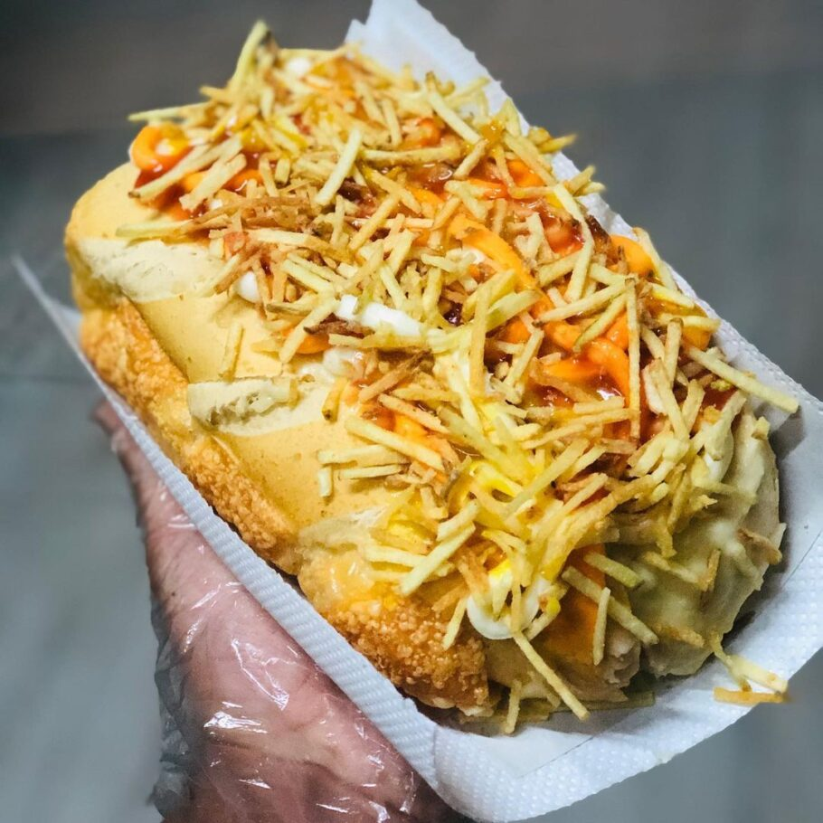

Brazilian Hot Dog - The improved version of an American classic

Description
In Brazil, we like to improve on other countries' traditional dishes. And by that, I mean to put a
lot more stuff on it, and make it better. If you guys think we're insane by doing this to hot dogs,
you really should look into what we've done with pizza (and may I say it, we perfected it in São Paulo.)
As for hot dogs, in Osasco (city in the São Paulo's metropolitan area) is where we've perfected it. It's
considered as the world capital of hot dog (and if you're offended by it, it displays you've yet to learn
the full potential of a hot dog.)
Think of it as something close to Joey's food combination logic:
If two things taste good separately,
it will taste even better together. Normally, we won't break any good-sense boundaries (like putting
candies on it), but never doubt our creative capability to make something look weird and taste good. So
odds are you'll find somewhere in the country (Brazil is big, after all) people making hot dogs that
sounds almost blasphemous, but probably taste wonderful.
Ingredients
- Tomato-based sauce (not ketchup, yet)
- Hot dogs (2 per portion, minimum)
- Mashed potatoes (the perfect bonding agent)
- Minced fried bacon (you really though we would leave bacon out of it?)
- Brazilian shoestring potato sticks (we call it batata-palha around here)
- Ketchup (there you go)
- Mustard
- Mayonnaise
- Melted cheddar cheese (just like McDonald's Cheddar McMelt... yeah baby)
- Hot dog breads, big ones (we're filling this bad boy up!)
Ingredients I've seen in brazilian hot dogs, but aren't my recomendations
- Tomato vinagrete
- Corn
- Lettuce
- Olives
- Pimenta malagueta
- Quail eggs (This is some Rio de Janeiro stuff. They're like our version of Florida)
- Beanless chilli (basically, minced meat cooked in tomato sauce)
Steps
- Cook your hot dogs in the tomato sauce, so it gets some extra flavor;
- Open your bread up, but don't go through it - you need it to hold our pile of food
- Start with the mayonnaise inside the bread
- Time a thin layer of ketchup and mustard (you can put more on top after too, we also do it)
- Enter the hot dogs. One is being cheap, we usually put two, three is overkill unless your bread is REALLY big
- Throw some bacon on it
- Give it a nice cover with melted cheddar
- Now it's time to put the responsible for holding it all together: mashed potatoes.
- Throw some batata-palha on top of the mashed potatoes, to bring a nice texture to it
- Add ketchup, mustard or any sauce of your preference on top of it
Return to top
Return to main page